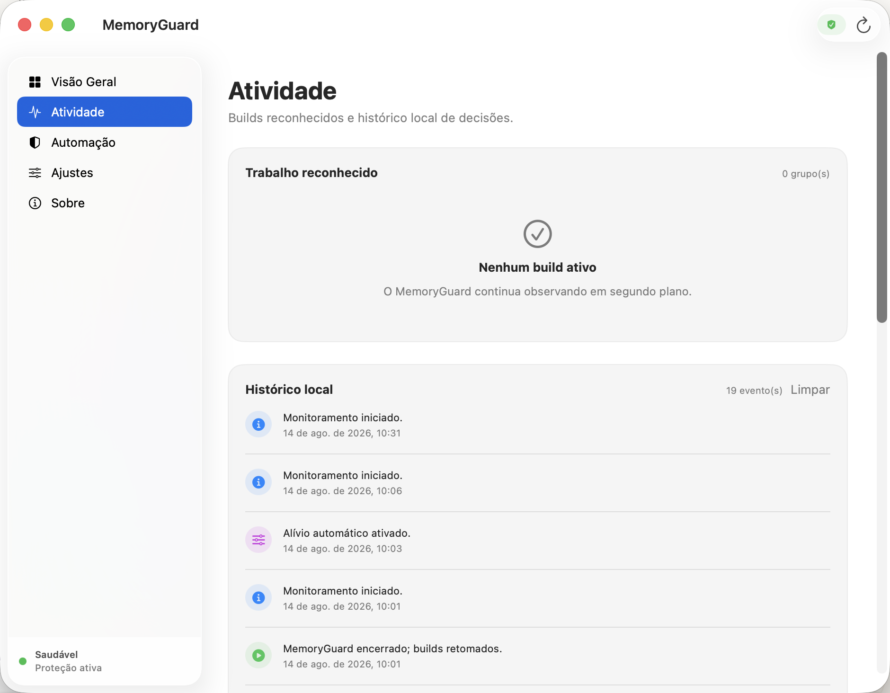
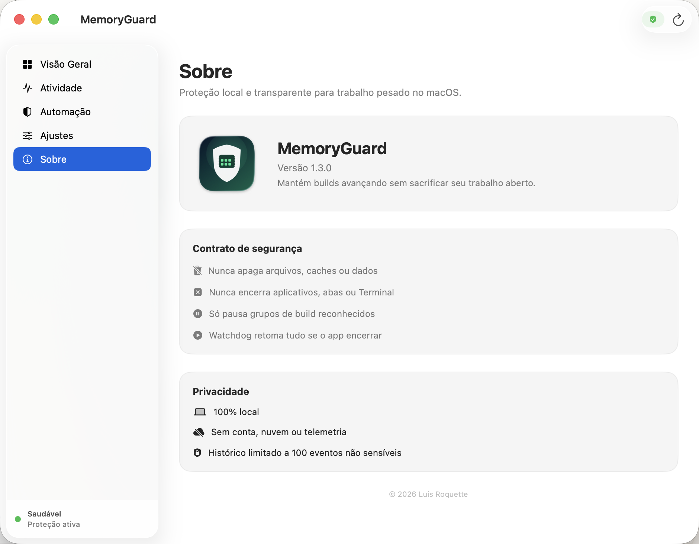

AI-assisted builders
Agents often compile, test and preview in parallel. MemoryGuard watches the resulting process groups while you stay focused on the product.
Free · Local-first · Native Swift
MemoryGuard automatically detects recognized heavy builds and safely serializes them only when macOS is genuinely running out of room.
macOS 14+ · MIT licensed · No account · No telemetry
The actual problem
You are writing code, moving between agents, tests and projects. Watching Activity Monitor should not be another job.
Agents often compile, test and preview in parallel. MemoryGuard watches the resulting process groups while you stay focused on the product.
A frontend build, a Swift compile and browser tests can overlap. MemoryGuard gives the older job room to finish instead of letting all of them stall.
If macOS slows down during concurrent builds, this is a focused safety utility—not a vague optimizer and not a destructive RAM cleaner.
One conservative decision
Available RAM, kernel pressure and remaining swap are evaluated together.
Only exact, recognized build groups above the selected profile threshold qualify.
At least two heavy groups are required. The older build keeps moving toward completion.
Two consecutive healthy samples release every paused group. A watchdog covers unexpected exits.
Unknown tools are ignored by design. A command merely mentioning “build” is never enough.
The real app
No mystery daemon. MemoryGuard shows what it recognized, what it decided and why.

Recognized build groups and a local decision history answer the basic question: “Is it doing anything right now?”
Start with Balanced. Proactive acts earlier; Conservative waits longer. The thresholds and decision sequence are shown in the interface.
The safety contract
MemoryGuard is intentionally narrower than a “system optimizer.” Narrow behavior is easier to understand, test and trust.
Two-minute setup
Get the free Apple-silicon build from GitHub Releases.
Move it to Applications and clear quarantine once because the free build is not notarized yet.
Leave automatic relief enabled. You do not need to classify builds yourself.
Optional: start it with macOS and leave the window closed in the menu bar.
xattr -dr com.apple.quarantine /Applications/MemoryGuard.app

Open by design
MemoryGuard is MIT licensed, built with native SwiftUI and AppKit, and has no third-party runtime dependencies.
Straight answers
No. It does not purge memory or delete caches. It temporarily serializes recognized build work only under real pressure.
No. MemoryGuard measures each recognized process group's resident memory and compares it with the selected profile.
It will never pause that build. At least two eligible heavy groups are required.
The free release is ad-hoc signed but not Apple-notarized yet. The one-time quarantine command lets you open the app after inspecting or downloading it from GitHub.
MemoryGuard keeps monitoring system health but does not control that workload. Recognition is allow-listed to avoid false positives.
Memory pressure without the panic